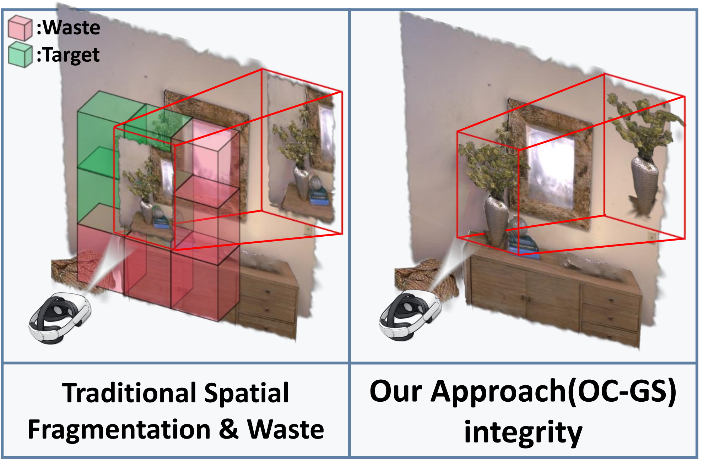
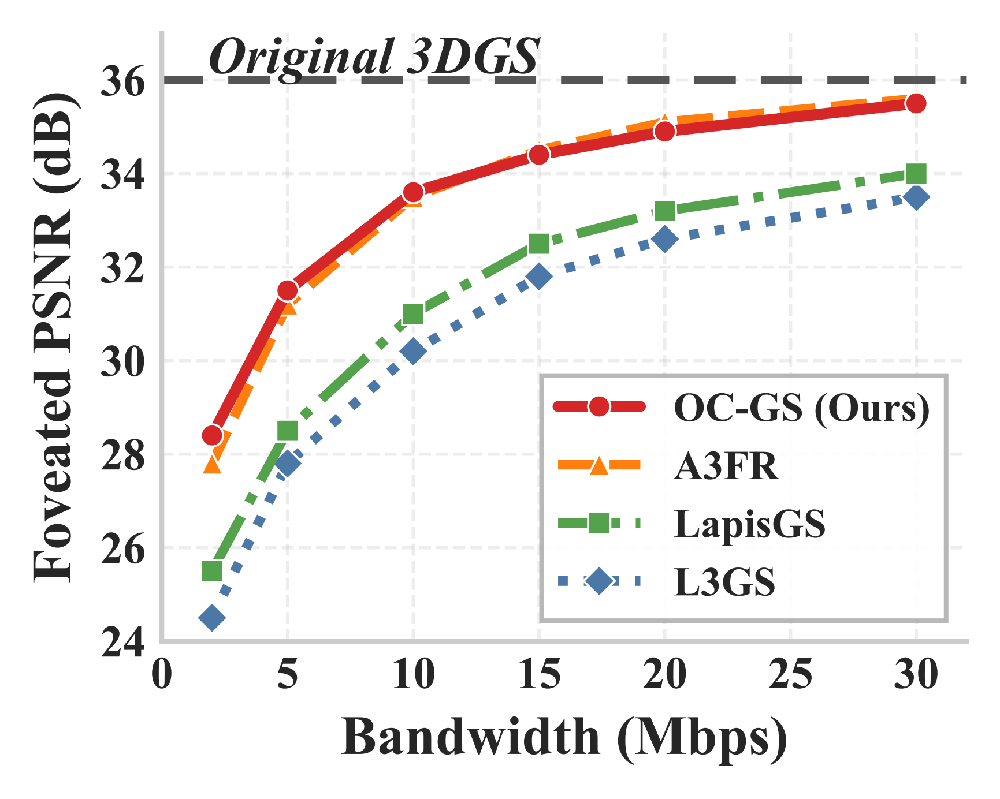

OC-GS: Object-Centric Representation--Demand Alignment for Immersive 3D Gaussian Streaming

Teaser: Illustration of our Object-Centric Gaussian Streaming (OC-GS) approach compared to traditional spatial-based streaming techniques. By aligning representations with semantic demands, we preserve high-fidelity rendering for attended objects even under constrained network bandwidth.
Abstract
3D Gaussian Splatting (3DGS) has emerged as the definitive representation for next-generation immersive media, yet its practical delivery over resource-constrained networks remains fundamentally unresolved. We argue that this is not merely a bandwidth or compression challenge, but a representation--demand alignment problem: existing systems organize transmission around spatial proximity, while user attention in immersive environments is organized around semantic objects---producing a structural mismatch at the representation, prediction, and control levels that cannot be resolved by bandwidth alone.
To correct this alignment failure, we present OC-GS (Object-Centric Gaussian Streaming), a two-stage alignment framework built around an object-addressable streaming substrate. Stage 1 (Representation Realignment): A Semantic-Saliency Co-distillation pipeline transforms raw Gaussians into an object-addressable substrate, elevating semantics from a passive scene attribute to an active semantic utility signal for resource allocation. A Hybrid Granularity architecture preserves spatial octrees for the macro-environment while packaging high-value entities as atomic micro-object bundles, fully decoupling semantic targets from their geometric context. Stage 2 (Stability-Governed Delivery): An object-grounded probabilistic predictor fuses physical kinematics, visual geometry, and a fixation-token intention prior to produce an object-level demand distribution, which feeds a Lyapunov-based solver that provides provable stability guarantees under coupled bandwidth and buffer constraints---achieving stability-governed streaming with churn suppression by design. Extensive evaluations on eye-tracked 6DoF traces demonstrate that OC-GS reduces redundant transmission by [XX]% and improves Foveated-PSNR by [XX] dB compared to state-of-the-art spatial-adaptive baselines, while achieving near-zero refetch ratios under realistic 5G network conditions.
Method Overview

Method Overview: Our framework consists of a Semantic-Saliency Co-distillation pipeline for Representation Realignment (Stage 1) and a Lyapunov-based solver for Stability-Governed Delivery (Stage 2).
Results

Qualitative Results: Visual comparison under constrained network conditions. OC-GS effectively allocates bandwidth to semantically salient objects, avoiding severe detail degradation in high-value areas compared to baselines.
Quantitative Analysis

Bandwidth Robustness

Foveated-PSNR (FDE) Evaluation

Rate-Distortion (R-D) Performance

Temporal Stability & Churn Suppression
Extensive evaluations demonstrate that our framework maintains provable stability, mitigates temporal churn, and consistently outperforms spatial-adaptive baselines across various bandwidth conditions.